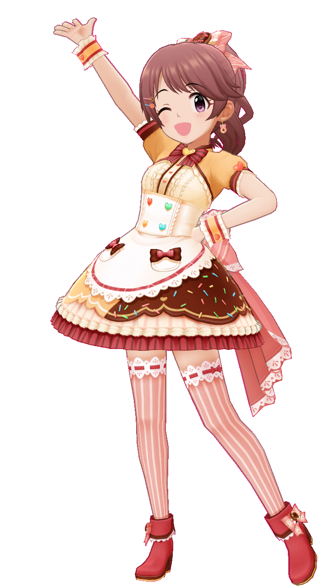
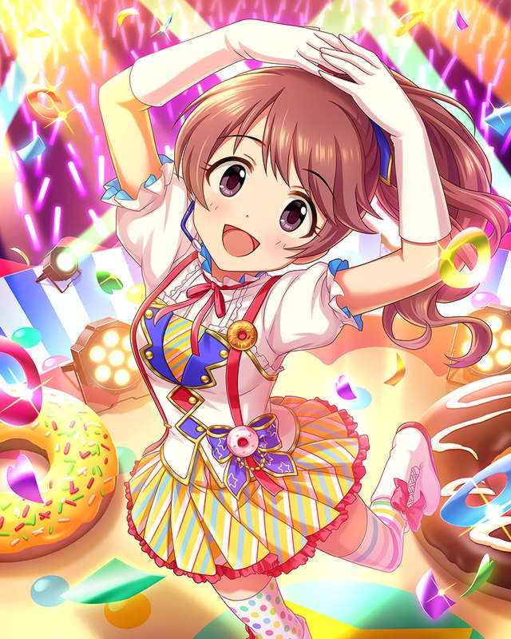

椎 名 法 子
SHIINA
NORIKO
The 8th Election Cheering Site

椎名法子って？

- 属性Cute
- 年齢13歳
- 出身地大阪
- 趣味新作ドーナツの試食
- CV都丸ちよ
※個人の感想※
笑顔やドヤ顔、たまに照れたり表情がとても豊かでかわいい
特に笑い声がgood……
もっと詳しく知りたい方は椎名法子のドーナツ帳をチェック！
法子ちゃんのドーナツ帳へシンデレラガールズ総選挙とは
シンデレラガールズ総選挙とは、モバマス・デレステで同時開催中の投票型のイベントです。
上位には新曲が追加されたり、イベントが開催されたりします。
多くのアイドルやプロデューサーの方と出会う機会になるので是非参加していきましょう
Q.投票権はどうしたら手に入りますか？
A.ログインボーナスやイベントの報酬なので手に入ります。
Q.投票する以外に応援する方法はありまか？
A.Twitterなどでプロデューサーが開催している企画に積極的に参加して盛り上げよう！
輪っかになって作戦会議！
椎名法子のプロデューサーの間でも様々な企画が開催されるよ！
椎名法子infoで企画の内容をチェックして参加しよう！
Tweets by InfoNorikoSまたDiscordのグループ◎のりこーど◎では法子P間での交流や会議などしているので参加してみてよう！
みんなで仲良く楽しく第8回シンデレラガールズ総選挙頑張りましょう～◎